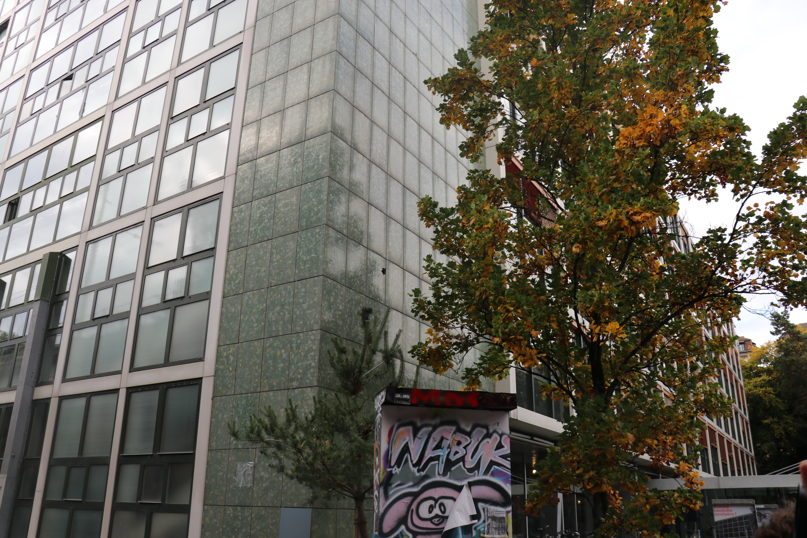
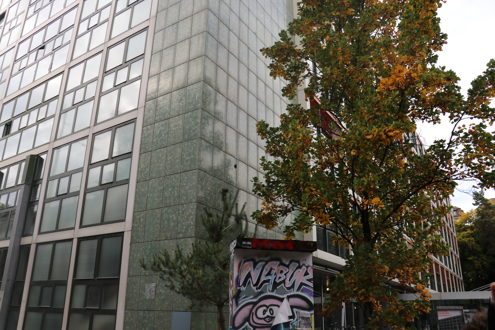

Photographies
les photographies présentées ci-dessous sont le fruit d'un travail qui consistait à prendre plusieurs photographies pour construire un thème choisit personnellement, le thème que j'avais choisit était "une balade autour de l'ERACOM en automne"


 

Extrait Vidéo
Le travail présenté ci-dessous faisait partie du module « stop-motion » de l’HEIG en lien avec ma formation en ingénierie des médias pendant la semaine du 21 au 28 octobre 2024. Pour ce travail, nous devions produire un film d’une durée d’environ 1 minutes et 10 secondes composé comme suit : Un titre (5s) Une boucle d’animation de 20 secondes mise 3x l’une derrière l’autre (60s) Un générique (5s) comportant les noms des personnes ayant produit le projet ainsi que la mention « MSCI 2024 » Pour produire ce travail j’ai été accompagné de Benjamin Rioux, Diogo Campos et Danny Conceiçao. Nous avons été supervisés et noté par Zoltán Horváth pour la note finale de 5.3. Mon rôle personnel à été la confection des décors ainsi que la réalisation générale du projet.